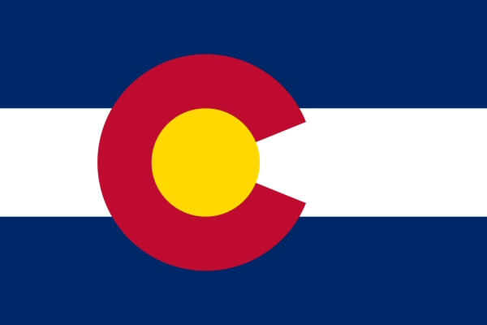

<!DOCTYPE html>
<html lang="eng">

<head>
    <meta charset="utf-8"/>
    <title>Chamber of Commerce Pitch</title>
    <meta name="viewport" content="width=device-width"/>
    <meta
    name="description"
    content="Webbsite plan for mockcochamber.com"/>
    <link rel="preconnect" href="https://fonts.googleapis.com">
    <link rel="preconnect" href="https://fonts.gstatic.com" crossorigin>
    <link href="https://fonts.googleapis.com/css2?family=Poppins:wght@300&family=Raleway&display=swap" rel="stylesheet"> 
    <link rel="icon" href="images/colorado-flag-logo.png">
    <link rel="stylesheet" href="styles/normalize.css">
    <link rel="stylesheet" href="styles/small.css">
    <link rel="stylesheet" href="styles/medium.css">
    <link rel="stylesheet" href="styles/large.css">    
</head>
</html>

<body>
    <header>
    <nav>
        <a href="index.html">Home</a>
        <a href="target-audience.html">Target Audience</a>
        <a href="typography.html">Typography</a>
        <a href="color-scheme.html">Color Scheme</a>
    </nav>
    </header>

    <main>
        <div>
            <p class="navdemo">Navigation bars will be blue with yellow text</p>
            <p>The footer of the website will share this trait. Default text
                will be black with a white background.
            </p>
        </div>

        <div class="highlight">
            <h2>h2 headers will be red with white text.</h2>
            <p>Points of interest will be a light gray to sperate them from the mostly white background.</p>
        </div>

        <div>
            
            <p>The colors for this site come from Colorado's flag</p>
        </div>
    </main>
    
    <footer>
        <div class="copyright">temp</div>
    </footer>
    <script src="scripts/website-planning.js"></script>
    </body>